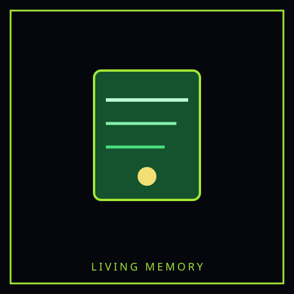
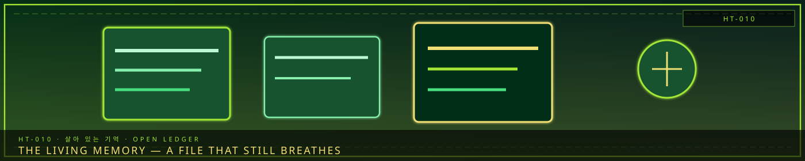

HT-010Bonded hope entity
STATUS: ARCHIVE VERIFIED |
CLEARANCE: LEVEL-4 OVERSIGHT |
PROTOCOL: REVERIE DIRECTORATE
ARTICLE
DISCUSSION
SOURCE
HISTORY
YEAR 4,238 · DAWN OF HOPE
HOPE TRANSFORMATION
The Living Memory — 살아 있는 기억
“Hope is not the opposite of Han. Hope is Han that agreed to be carried.”

Overview
The Living Memory — 살아 있는 기억 is a Hope Transformation — sorrow that the Hand of Hope turned into a bonded hope entity without erasing the wound that made it. It is borne by Mori (모리), The Doll Maker. Unlike a Sorrow Entity, it is not contained in a cell and does not yield M.A.W. by extraction. It remains stable only while the bond holds.
Hope Transformations sit beside Sorrow Entities, not inside them. The Reverie Directorate catalogues Sorrow under SECC. Dawn Initiative bearers catalogue Hope under HT designations. The grief is still present; it is made usable.
Classification
| Designation | HT-IV-HM-010 [S] |
|---|---|
| Registry | HT-010 |
| Category | Hope Transformation / Hope Bond |
| Aspect | Hope-Memory |
| Coherence | IV — Entity |
| Intensity | γ — Warm |
| Element | Spark — connection and restoration |
| Manifestation | Subject — bonded memory-figure |
| Bearer | Mori (모리), The Doll Maker |
| Bearer role | Crafter and memorial keeper of the Dawn Initiative |
| Source sorrow | Hope transformed from Mori’s sorrow after their child Fractured and the fear that imperfect memories were worse than forgetting |
| Status | Stable while bonded; bearer-dependent |
Appearance
The Living Memory appears as a small golden figure with a porcelain-like body and a face that never settles into one identity. It wears a miniature craftsman’s apron and carries a thread of light between its hands.
When near a memorial object, it borrows one harmless feature from the person remembered: a gesture, a laugh, the way they held a cup. It never becomes the complete person and cannot answer questions on their behalf.
Origin
Mori began making Han-crystal dolls after their child Fractured. Each doll preserved a detail: a favorite posture, a phrase, the shape of a smile. Mori feared that if the dolls were imperfect, they would insult the dead; if they were perfect, they would become replacements.
The Living Memory appeared when Mori left one doll unfinished. The golden figure took the unfinished thread and tied it to the doll’s hand.
The result did not look exactly like Mori’s child. It looked like a memory that admitted it was a memory.
Hope function
The Living Memory preserves names, stories, sensory details, and emotional truths without claiming to restore the dead. It helps communities remember without allowing memorials to become prisons.
- Preserve a fading memory in Hope-crystal.
- Animate a memorial object for brief, symbolic movement.
- Separate a genuine memory from a fabricated Echo.
- Help Fractured people retain a personal anchor.
- Create a shared archive from many incomplete recollections.
It cannot reconstruct a complete dead person or prove that one memory is the only true version.
Bearer cost
Mori experiences the emotional texture of every memory preserved. Repeated use causes borrowed mannerisms, accelerated aging, confusion between their child’s memories and strangers’ memories, and painful attachment to unfinished objects.
The entity requires Mori to destroy or release some memories. Preservation without choice becomes another form of imprisonment.
See Hope Transformations and Dawn of Hope.
CANONICAL CROSS-LINKS